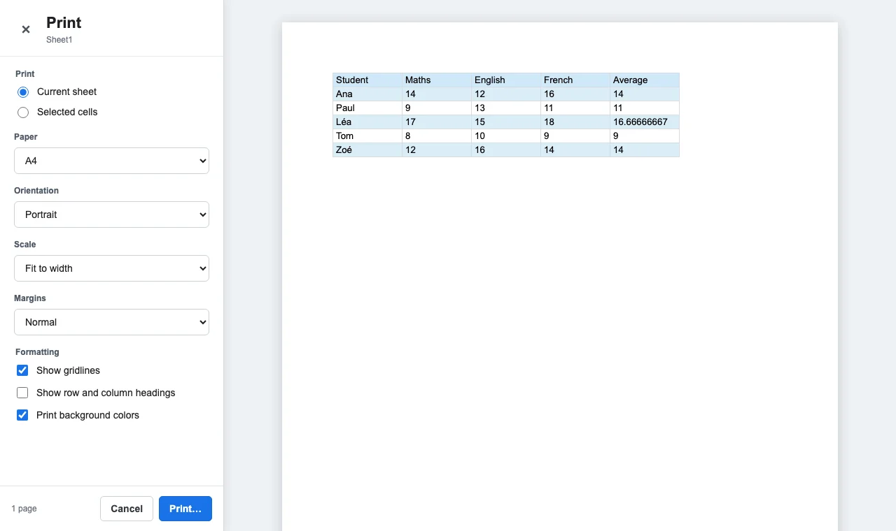

Printing
File › Print… or Ctrl P shows the pages as they will be printed.

| Setting | Choices |
|---|---|
| the current sheet, or the cells selected before opening the window | |
| Paper | A4, Letter |
| Orientation | portrait, landscape |
| Scale | Actual size; Fit to width: all the columns on one page width; Fit to page |
| Margins | normal, narrow, wide |
| Formatting | gridlines, row and column headers, fill colors |
Print… opens the browser's window, where the printer or saving as PDF is chosen.
- Only the cells are printed, with their formatting: no charts, images or sparklines.
- Hidden rows and columns are not printed.
- A checkbox is printed as TRUE or FALSE.
- One sheet is printed at a time.
To print with the charts, save the workbook and open it in Excel or LibreOffice.